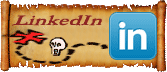
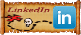

Connecting to the World With Social Media
Connecting to the World With Social Media


 

LINKEDIN: Are You Connected?
LinkedIn is a business-oriented social networking site. Founded in December 2002 and launched in May 2003. It is mainly used for professional networking. As of August 2010, LinkedIn had more than 75 million registered users, spanning more than 200 countries and territories worldwide.
Relationships Matter
Your professional network of trusted contacts gives you an advantage in your career, and is one of your most valuable assets. LinkedIn exists to help you make better use of your professional network and help the people you trust in return. Our mission is to connect the world’s professionals to make them more productive and successful. We believe that in a global connected economy, your success as a professional and your competitiveness as a company depends upon faster access to insight and resources you can trust.
Joining Linked In
When you join, you create a profile that summarizes your professional expertise and accomplishments. You can then form enduring connections by inviting trusted contacts to join LinkedIn and connect to you. Your network consists of your connections, your connections’ connections, and the people they know, linking you to a vast number of qualified professionals and experts.